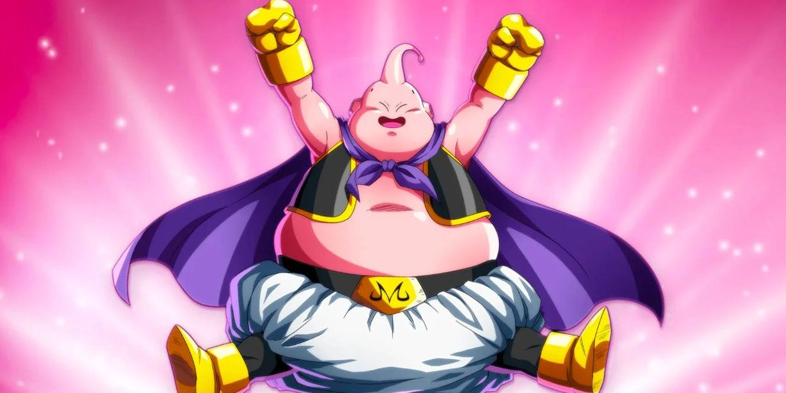

Majin-boo

Majin-Boo Inocente (無む邪じゃ気きな魔ま人じんブウ, Mujakina Majin Bū[5]), también conocido como el Monstruo Boo o simplemente como Majin-Boo (魔ま人じんブウ, Majin Bū) es la encarnación que tomó Pequeño Boo como resultado de absorber al Gran Kaio-shin del Universo 7 hace más de 5 millones de años, volviéndolo un ser inocente y más débil. Majin-Boo Inocente dejó de existir como individuo cuando este utilizó la habilidad de fisión para separarse en dos mitades diferentes, una buena, llamada Boo Gordo, y una mala, conocida como Majin-Boo Maldad Pura. A pesar de ser físicamente idénticos, Majin-Boo Inocente no debe ser confundido con "Boo Gordo", ya que él es una diferente forma de vida, la cual es considerablemente más poderosa, debido a los cambios que se produjeron cuando Majin-Boo Maldad Pura fue expulsado de su cuerpo, haciendo que Boo Gordo, a diferencia de Majin-Boo Inocente, no necesita hibernar por largos períodos de tiempo[6]. A causa de esto, la versión inocente de Majin-Boo es altamente manipulable a través de estímulos externos, alternando entre acciones buenas y malas dependiendo de quién lo domine. Majin-Boo Inocente es un personaje que aparece por primera vez como uno de los antagonistas del Arco de Majin-Boo en el manga de Dragon Ball y el anime de Dragon Ball Z y Dragon Ball Z Kai: Los capítulos finales.
Regresar